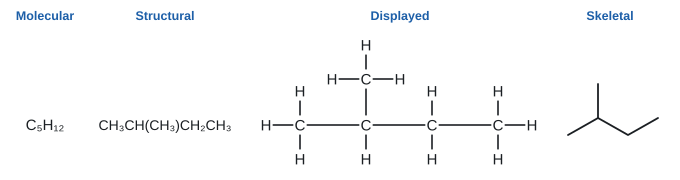
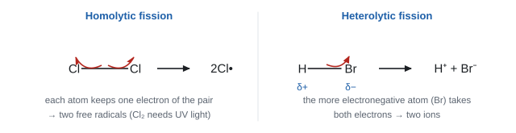
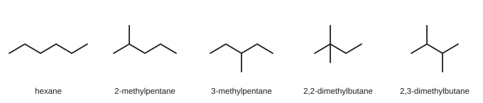
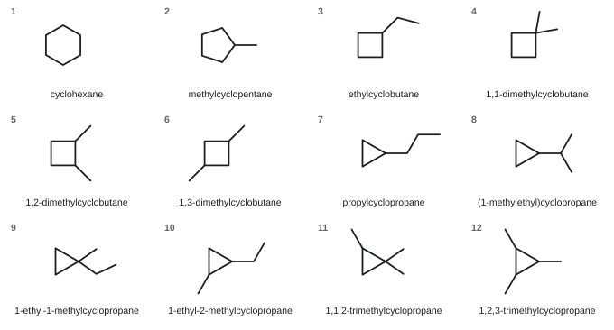
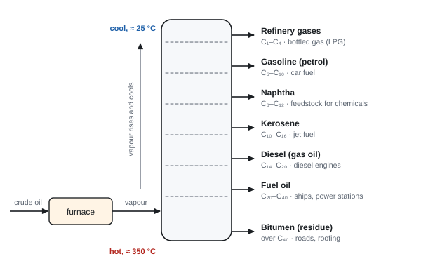

Introductory organic chemistry and alkanes
Organic chemistry is the chemistry of carbon compounds, and there are millions of them. This topic gives you the tools to handle them all: how to draw and name organic molecules, how isomers arise, and how chemists describe the way bonds break. Then it puts those tools to work on the simplest family, the alkanes: where they come from, why they make good fuels, what pollution they cause, and how they react with halogens by a free-radical chain reaction.
Spec4.1Hazard and risk
Know the difference between a hazard and a risk.
Two different ideas
- A hazard is something that could cause harm. It is a property of the substance or the equipment itself: bromine is toxic, hexane is flammable, concentrated acid is corrosive. You can't change a hazard.
- A risk is the chance (likelihood) that the hazard actually causes harm, and how bad that harm would be, in the way you are using it. It depends on the amount, the concentration, the conditions (heating, open bench or fume cupboard) and who is doing the work.
- Safety precautions reduce the risk. They never remove the hazard. Goggles don't make an acid less corrosive; they make it less likely the acid reaches your eyes.
| Hazard | Risk | |
|---|---|---|
| What it is | the potential to cause harm | the chance of harm happening in a given use |
| Can you change it? | no, it belongs to the substance | yes, by changing how you work |
| Example | ethanol is flammable | low with a few cm³ in a water bath; high if heated over a Bunsen flame |
Hazard symbols
Bottles carry the internationally agreed hazard pictograms (red-bordered diamonds). The ones you meet most in organic chemistry:
| Pictogram | Meaning | Organic examples |
|---|---|---|
| Flame | flammable | alkanes, alkenes, alcohols, cyclohexane |
| Flame over a circle | oxidising (makes other things burn more fiercely) | potassium manganate(VII), potassium dichromate(VI) |
| Skull and crossbones | acutely toxic | bromine, carbon monoxide, methanol |
| Corrosive (liquid eating a hand and a surface) | corrosive | bromine, concentrated acids |
| Exclamation mark | harmful / irritant | dilute bromine water, many halogenoalkanes |
| Health hazard (person with a star on the chest) | carcinogenic, mutagenic, long-term harm | benzene, some halogenoalkanes, dichromates |
| Dead tree and fish | harmful to the environment | halogenated solvents |
| Gas cylinder, exploding bomb | gas under pressure; explosive | gas cylinders; organic peroxides |
- "Flammable / inflammable" for a fuel or solvent; "toxic / corrosive / poisonous / irritant" for HCl gas. The word must match the hazard: flammable for HCl negated the mark.
- Pick only the symbols that apply to the substance named. Ticking every symbol scores nothing.
Often asked as: MCQ on which pictogram fits a substance; "identify a hazard of X and a precaution".
Confusing the flammable and oxidising symbols. Flammable = a flame on its own (the substance burns). Oxidising = a flame on top of a circle (the substance makes something else burn).
Saying a precaution "removes the hazard". It lowers the risk only.
Spec4.2Hazards of organic compounds and risk assessments
Know the typical hazards of organic compounds, and why a risk assessment is needed before you work with hazardous materials.
Why organic compounds are often hazardous
- Flammable. Most organic compounds burn. Small molecules are volatile: they evaporate easily at room temperature, so their vapour can reach a flame some distance away and ignite.
- Toxic or harmful. Many vapours are harmful to breathe (halogenoalkanes, bromine, benzene). Some are carcinogenic (benzene) or cause long-term damage.
- Irritant or corrosive. Bromine, acids used as catalysts (phosphoric(V), sulfuric).
- Products can be hazardous too. Incomplete combustion makes carbon monoxide; burning PVC releases hydrogen chloride gas.
What a risk assessment does
A risk assessment is done before the practical. You:
- List every substance used and made, and look up its hazards (for example on a safety data sheet).
- Decide how big the risk is in this procedure (amounts, heating, gases given off, who is doing it).
- Choose control measures that lower each risk (see 4.3).
- Plan what to do if something goes wrong (spills, skin contact, fire).
Why it is needed: so you know the hazards in advance, can reduce the risk to an acceptable level, and are ready for an accident. In a school or industry, it is also a legal requirement.
- A two-mark "hazard and precaution" question: M1 names the hazard; M2 gives a precaution linked to that hazard. Jan 2020: "flammable" + "avoid naked flames / use a heating mantle / electric water bath / small amounts".
- IGNORE generic answers: fume cupboard (for a flammable liquid), gloves, tie hair back, fire extinguisher, "do not heat".
- Oct 2020: an oxidising agent must not be mixed with alkanes because it promotes burning and alkanes are flammable.
Often asked as: name a hazard and a precaution; explain why two chemicals must be stored apart; everyday safety in an unfamiliar context.
"Wear goggles and a lab coat" scores nothing on its own: these are worn in every practical. Give a precaution aimed at this hazard (WCH11 Jan 2020 ER).
Writing that mixing an oxidiser and a fuel "starts a fire". It makes a fire burn more fiercely (WCH11 Oct 2020 ER).
Spec4.3Reducing risk
Suggest ways to reduce risk and carry out reactions safely: (i) work on a smaller scale, (ii) take precautions that suit the particular hazard, (iii) use a different method with less hazardous substances.
Three ways to cut the risk
| Method | How it helps | Example |
|---|---|---|
| (i) Smaller scale | less substance → less vapour, smaller fire, smaller spill | microscale tests in a spotting tile; a few drops of bromine water |
| (ii) Precaution matched to the hazard | targets the way harm would happen | flammable → no naked flames, heat with a water bath or electric heating mantle; toxic gas or vapour → fume cupboard; corrosive → gloves and goggles |
| (iii) Less hazardous alternative | swaps a dangerous chemical for a safer one | bromine water instead of liquid bromine; cyclohexane instead of benzene; a plant-based fuel instead of a toxic solvent |
Hazards in the Unit 1 organic practicals
| Practical | Hazard | Precaution |
|---|---|---|
| Testing with bromine | liquid bromine: very toxic, corrosive vapour | use dilute bromine water, small volumes, fume cupboard, gloves |
| Burning or heating alkanes, alkenes, cyclohexane | flammable, volatile | no naked flames near the bottle; small amounts; heat in a water bath |
| Halogenation in UV light | chlorine is toxic; UV damages eyes | fume cupboard; UV-protective screen or glasses |
| Cracking liquid paraffin | hot glass; suck-back of cold water; flammable gases | remove the delivery tube from the water before you stop heating; no flames near collected gas |
| Oxidation with acidified KMnO₄ | oxidising; acid is an irritant | gloves and goggles; keep away from flammables |
| Incomplete combustion | carbon monoxide is toxic | good ventilation; fume cupboard |
Oct 2025 (carbon monoxide exposure), two of: "use a fume cupboard"; "open windows / doors (ventilation)"; "wear a respirator / oxygen mask"; "take breaks, to avoid continuous exposure".
Often asked as: suggest a safer method; suggest how to reduce the risk in a given preparation.
For "suggest" questions, think: what is the hazard → how would it hurt someone → what stops that route. Vapour that ignites → keep flames away. Gas that poisons → fume cupboard. Liquid that burns skin → gloves.
Spec4.4Homologous series and functional groups
Understand what a homologous series is and what a functional group is.
Definitions
- A functional group is the atom or group of atoms that gives a compound its characteristic chemical reactions. Examples: C=C in alkenes, –OH in alcohols, –Br in bromoalkanes.
- A homologous series is a family of organic compounds that:
- have the same functional group;
- have the same general formula;
- differ from the next member by CH₂;
- have similar chemical properties (they react in the same way);
- show a gradual trend in physical properties (for example, boiling temperature rises as the chain gets longer).
Series you meet in Unit 1
| Series | Functional group | General formula | Example | Name ending |
|---|---|---|---|---|
| Alkanes | none (C–C and C–H only) | CₙH₂ₙ₊₂ | CH₃CH₂CH₃ propane | -ane |
| Cycloalkanes | ring of C–C bonds | CₙH₂ₙ | cyclohexane | cyclo…ane |
| Alkenes | C=C | CₙH₂ₙ | CH₂=CHCH₃ propene | -ene |
| Halogenoalkanes | C–X (X = F, Cl, Br, I) | CₙH₂ₙ₊₁X | CH₃CH₂Br bromoethane | prefix chloro-, bromo- … |
| Alcohols | –OH | CₙH₂ₙ₊₁OH | CH₃CH₂OH ethanol | -ol |
Trend in physical properties
| Alkane | Formula | Boiling temperature / °C | State at 20 °C |
|---|---|---|---|
| methane | CH₄ | −162 | gas |
| ethane | C₂H₆ | −89 | gas |
| propane | C₃H₈ | −42 | gas |
| butane | C₄H₁₀ | −1 | gas |
| pentane | C₅H₁₂ | 36 | liquid |
| hexane | C₆H₁₄ | 69 | liquid |
Each extra CH₂ adds more electrons, so the London forces between molecules get stronger and more energy is needed to separate them. (Intermolecular forces are covered fully in Unit 2.)
Jan 2025 (same homologous series), two from: "same functional group"; "similar chemical properties"; "same general formula"; "differ by CH₂".
Often asked as: state two features of a homologous series; MCQ on which pair is in the same series; deduce a general formula for an unfamiliar series.
Saying members of a series have the "same physical properties". Their physical properties change gradually; it is the chemical properties that are similar.
Spec4.5IUPAC naming and drawing organic compounds
(i) Name the compounds in this specification using IUPAC rules. (ii) Draw them as structural, displayed and skeletal formulae. Know the stems for C1 to C10.
Stems
| Carbons | 1 | 2 | 3 | 4 | 5 | 6 | 7 | 8 | 9 | 10 |
|---|---|---|---|---|---|---|---|---|---|---|
| Stem | meth | eth | prop | but | pent | hex | hept | oct | non | dec |
The same stems give the side-chain (alkyl) names: methyl –CH₃, ethyl –C₂H₅, propyl –C₃H₇.
Naming a branched alkane: the routine
- Find the longest continuous carbon chain. It may bend round corners on the page. This gives the stem.
- Number the chain from the end that gives the side chains the lowest numbers (lowest locants).
- Name each side chain and give its number. Two or more of the same group: di-, tri-, tetra-, and every group needs its own number (2,2-dimethyl, not 2-dimethyl).
- Different groups go in alphabetical order (ethyl before methyl; bromo before chloro before methyl). Ignore di- and tri- when you alphabetise.
- Punctuation: commas between numbers, hyphens between numbers and letters, and the last prefix runs straight into the stem (2-methylpentane).
Worked example: 2,2,4-trimethylpentane
Structure: (CH₃)₃CCH₂CH(CH₃)CH₃
- Longest chain: 5 carbons → pentane.
- Three methyl groups. Numbered from the left they sit on C2, C2 and C4. From the right they sit on C2, C4, C4.
- Compare the first point of difference: 2,2,4 beats 2,4,4. Number from the left.
- Three methyls → trimethyl, and each one gets a number.
Name: 2,2,4-trimethylpentane (this is "iso-octane", the petrol standard).
Worked example: alphabetical order
CH₃CH₂CH(C₂H₅)CH₂CH(CH₃)CH₃
Longest chain: 6 carbons (hexane). Numbering from the right gives methyl at 2 and ethyl at 4 (from the left it would be 3 and 5).
Alphabetical: ethyl before methyl → 4-ethyl-2-methylhexane.
Name CH3CH(CH3)CH2CH(C2H5)CH3. Draw it out first: a chain of five carbons, with a methyl on carbon 2 and an ethyl on carbon 4.
Look for the longest chain. Following the chain into the ethyl group gives six carbons, not five. So the stem is hex and the compound is a hexane.
The ethyl group was never really a branch: it is part of the longest chain. A "branch" of two or more carbons on the second-to-last carbon is a warning sign that you have missed the longest chain.
Along this six-carbon chain there are now two methyl branches. Numbering from one end puts them on carbons 2 and 4; from the other end, on 3 and 5. Choose the lower set, 2 and 4.
Two methyl groups means "dimethyl", and both positions are given: 2,4-dimethylhexane.
Naming other families
| Family | Rule | Examples |
|---|---|---|
| Cycloalkanes | add cyclo- to the stem; number round the ring so substituents get the lowest numbers | cyclohexane; methylcyclopentane; 1,2-dimethylcyclobutane |
| Alkenes | stem + -ene; number the C=C from the end that gives it the lowest number, then place side chains | but-1-ene CH₂=CHCH₂CH₃; but-2-ene CH₃CH=CHCH₃; 2-methylbut-2-ene (CH₃)₂C=CHCH₃; 3-methylbut-1-ene CH₂=CHCH(CH₃)₂ |
| Halogenoalkanes | prefix fluoro-, chloro-, bromo-, iodo-, alphabetical with alkyl groups | 1,2-dibromopropane CH₂BrCHBrCH₃; 2-bromo-2-methylpropane (CH₃)₃CBr; 2-chloro-3-methylbutane |
| Alcohols | stem + -ol with the position of the –OH | propan-1-ol CH₃CH₂CH₂OH; propan-2-ol CH₃CH(OH)CH₃ |
| Diols | keep the "e" of the stem, add -diol | ethane-1,2-diol HOCH₂CH₂OH; propane-1,2-diol CH₃CH(OH)CH₂OH |
| Polymers | poly(monomer name) | poly(ethene); poly(propene); poly(chloroethene) |
When two numbering directions tie, the group that comes first in the alphabet gets the lower number: CH₃CHClCH(CH₃)CH₃ is 2-chloro-3-methylbutane.
The formula types
| Type | What it shows | 2-methylbutane |
|---|---|---|
| Molecular | the actual number of each atom | C₅H₁₂ |
| Empirical | simplest whole-number ratio | C₅H₁₂ (no simpler ratio here; for ethane, C₂H₆, it is CH₃) |
| General | formula for a whole series | CₙH₂ₙ₊₂ |
| Structural | enough to identify the structure without ambiguity, group by group | CH₃CH(CH₃)CH₂CH₃ |
| Displayed | every atom and every bond | see figure |
| Skeletal | carbon chain as zig-zag lines; each end and each corner is a carbon; H on carbon not shown; functional groups shown in full | see figure |

Drawing tips
- Displayed: count four bonds on every carbon. Draw the O–H bond in an alcohol (C–O–H), not just "OH".
- Skeletal: never write C or CH₃ at the line ends. Do write functional groups: –OH, –Br, and the C=C as a double line. Count the corners and ends afterwards to check the carbon total.
- Structural: brackets show a side chain on the carbon just before it: CH₃CH(CH₃)CH₃.
- Skeletal formula: "IGNORE bond angles and lengths"; a skeletal formula with CH₃ groups written in is not credited (Jan 2019). The O–H in a skeletal alcohol must be bonded through the O: "do not allow O–H–C".
- If you give more than one type of formula for the same molecule, all must be correct.
- Names need every part: E/Z where relevant, the position of the double bond, the stem and the ending.
Often asked as: name a branched alkane (2,2,4-trimethylpentane in Jan 2023 and Oct 2024); draw a skeletal formula from a name; name a product such as 1,2-dibromopropane.
"2,2-dimethyl-4-methylpentane": combine identical groups and number them all → 2,2,4-trimethylpentane (WCH11 Jan 2023 ER).
Counting the longest chain wrongly when it bends. Trace every possible chain.
Numbering from the wrong end (2,4,4- instead of 2,2,4-).
Missing "cyclo" or "di"; using "oct" for the wrong number of carbons (WCH11 Jun 2024 ER).
Giving a molecular formula when the skeletal formula is asked for, or a structural formula when displayed is asked for (WCH11 Oct 2020 ER).
Names of unfamiliar molecules built from the same rules, e.g. 3-ethyl-2,3-dimethylpentane in an MCQ (WCH11 Jan 2026).
Simple inorganic names using the same prefixes: S₂F₁₀ is disulfur decafluoride (WCH11 Jan 2025).
Spec4.6Classifying reactions
Classify a reaction as addition, substitution, oxidation, reduction or polymerisation.
The five types
| Type | What happens | Unit 1 example |
|---|---|---|
| Addition | two molecules join to give one product; a C=C becomes C–C | CH₂=CH₂ + Br₂ → CH₂BrCH₂Br |
| Substitution | one atom or group is replaced by another; two products | CH₄ + Cl₂ → CH₃Cl + HCl |
| Oxidation | gain of oxygen or loss of hydrogen (loss of electrons) | combustion; alkene + acidified KMnO₄ → diol |
| Reduction | gain of hydrogen or loss of oxygen (gain of electrons) | CH₂=CH₂ + H₂ → CH₃CH₃ |
| Polymerisation | many small monomer molecules join into a long chain | n CH₂=CH₂ → –[CH₂–CH₂]–ₙ |
How to decide
- Count the products. One product from two reactants → addition. Two products, with an atom swapped → substitution.
- Look at what the organic molecule gains or loses. Gains O or loses H → oxidation. Gains H → reduction.
- One reaction can fit two labels. Alkene + H₂ is addition and reduction (also called hydrogenation).
- The mechanism name adds a word in front: free radical substitution (4.18); electrophilic addition (5.6).
- Exact words are needed. Jan 2020, alkene + H₂ with nickel: "addition / reduction / hydrogenation". DO NOT AWARD "electrophilic addition" for this reaction.
- Jun 2022: an alkene + HBr needed "electrophilic addition"; "addition" alone was not enough there.
Often asked as: "state the type of reaction"; classify each step in a reaction scheme.
Calling a substitution an "addition" (WCH11 Oct 2020 ER). Check: did the C=C disappear, or did one atom swap for another?
Calling hydrogenation "electrophilic addition". H₂ is not an electrophile; the reaction happens on the nickel surface.
Spec4.7Homolytic and heterolytic bond breaking
Understand that a covalent bond can break (i) homolytically, giving free radicals, or (ii) heterolytically, giving ions.
Two ways to split a bonding pair
- Homolytic fission: the bond breaks evenly. Each atom takes one electron from the shared pair. You get two free radicals.
- Cl–Cl → Cl• + •Cl (written 2Cl•)
- Needs energy from UV light or high temperature. Typical for non-polar bonds such as Cl–Cl, Br–Br, C–C.
- Heterolytic fission: the bond breaks unevenly. One atom takes both electrons. You get a positive ion and a negative ion.
- H–Br → H⁺ + Br⁻
- The more electronegative atom takes the pair. Typical for polar bonds.

Curly-arrow rules
| Arrow | Shows the movement of | Used in |
|---|---|---|
| Half-headed (fish-hook), one barb | one electron | homolytic fission, free-radical steps |
| Full (double-barbed) head | a pair of electrons | heterolytic fission, electrophilic addition |
- An arrow always starts at a bond or a lone pair (where the electrons are) and ends at an atom (or between two atoms where a new bond forms).
- Never start an arrow on an atom symbol or on a + charge.
- Homolytic fission: "the bond breaks and one electron goes to each atom". Mention electrons moving; "splits equally" alone is too vague (Jan 2024 ER).
- Initiation drawn with single-headed (half) arrows on the bond and dots on both radicals; omission of the dot is penalised once only.
Often asked as: define homolytic fission; draw the homolytic fission of a given molecule (not just Cl₂); MCQ on the products of heterolytic fission.
Double-headed arrows for homolytic fission (WCH11 Jun 2019, Oct 2020, Jun 2024 ER).
Showing radicals with charges (Cl⁺, Cl⁻) instead of dots.
Showing homolytic fission of Cl₂ when the question asked about a different molecule (WCH11 Oct 2020 ER).
Spec4.8Free radicals and electrophiles
Know the definitions of "free radical" and "electrophile".
Definitions to learn word for word
- Free radical: a species with an unpaired electron. Shown with a dot on the atom that carries the unpaired electron: Cl•, CH₃•, CH₃CH₂•.
- Electrophile: an electron-pair acceptor. It is attracted to a region of high electron density (such as a C=C double bond) and accepts a pair of electrons to form a new covalent bond. Electrophiles are positive ions or have a δ+ atom: H⁺, the Hδ+ end of HBr, the Brδ+ end of a polarised Br₂.
Why radicals and electrophiles react
- A radical's unpaired electron makes it very reactive: it pairs up by taking an electron from another molecule.
- An electrophile is short of electrons, so it heads for electron-rich sites. "Electrophile" = electron-loving.
- Free radical: "(a species with) a single / unpaired electron". ALLOW "free electron". IGNORE "free radical" repeated in the answer (Jan 2026).
- Electrophile: "electron pair acceptor". (Section B mark schemes rarely ask this outright; it appears in MCQs and mechanisms.)
Often asked as: define free radical (1 mark); identify the electrophile in a mechanism; MCQ.
"A radical has a free electron" or "its own electron" can lose the mark; say unpaired. A Cl atom with a dot and no charge is a radical; Cl⁻ is an ion, not a radical.
The opposite of an electrophile, a nucleophile, is an electron-pair donor (Br⁻ in step 2 of electrophilic addition, OH⁻ in Unit 2). Nucleophile and electrophile appear side by side as MCQ options (WCH11 Jun 2022).
Spec4.9Alkanes and cycloalkanes
Know the general formulae of alkanes and cycloalkanes, and that they are saturated hydrocarbons (C and H only, single bonds only).
Key words
- Hydrocarbon: a compound of carbon and hydrogen only.
- Saturated: contains single bonds only (no C=C).
- Alkane: CₙH₂ₙ₊₂, open chain (straight or branched). Methane CH₄, ethane C₂H₆, propane C₃H₈, butane C₄H₁₀.
- Cycloalkane: CₙH₂ₙ, the carbons form a ring. Closing the ring removes two H atoms. Cyclohexane C₆H₁₂.
Cycloalkanes have the same general formula as alkenes but are still saturated. That's why C₆H₁₂ could be hexene or cyclohexane, and only a test (5.5) tells them apart.
Structure and properties
- Each carbon makes four single bonds arranged tetrahedrally, bond angle 109.5°. A chain is therefore zig-zag, not straight.
- Unreactive in general: C–C and C–H bonds are strong and almost non-polar, so electrophiles and nucleophiles are not attracted. Alkanes do burn (4.17) and react with halogens in UV light (4.18).
- Boiling temperature rises with chain length (more London forces). Branching lowers it: pentane 36 °C, 2-methylbutane 28 °C, 2,2-dimethylpropane 10 °C. Branched molecules can't pack as closely, so there is less contact between them.
- Insoluble in water; good solvents for other non-polar substances.
- "Hydrocarbon: contains hydrogen and carbon only." "Saturated: single (C–C) bonds only."
- General formula questions often come as MCQs: CₙH₂ₙ₊₂ for alkanes, CₙH₂ₙ for cycloalkanes, CₙH₂ₙ₋₂ for cycloalkenes (Oct 2024, Jan 2026).
Often asked as: MCQ on a general formula; "explain why cyclohexane is saturated"; "why does cyclohexane have the same formula as hexene?"
"A hydrocarbon contains hydrogen and carbon" without only. Ethanol contains hydrogen and carbon too.
Thinking every CₙH₂ₙ compound is an alkene. Cycloalkanes share the formula.
Spec4.10Structural isomerism
Understand structural isomerism and draw the structural isomers of a compound from its molecular formula.
Definition
Structural isomers have the same molecular formula but different structural formulae (the atoms are joined in a different order).
Three kinds
| Kind | What changes | Example (same molecular formula) |
|---|---|---|
| Chain | the carbon skeleton (branching) | butane and 2-methylpropane (C₄H₁₀) |
| Position | where the functional group sits | 1-bromopropane and 2-bromopropane (C₃H₇Br); but-1-ene and but-2-ene (C₄H₈) |
| Functional group | a different functional group | propene (alkene) and cyclopropane (cycloalkane), both C₃H₆ |
Structural isomers are different compounds: their physical properties differ (branched isomers boil lower), and with a different functional group their chemistry differs too.
How to draw all the isomers without repeats
- Draw the longest chain first (all carbons in a line).
- Shorten the chain by one carbon. Put that carbon on as a branch, at each different position. Never on an end carbon: a methyl on C1 just makes the chain longer again.
- Shorten by two: add two methyls (same carbon or different carbons) or one ethyl. An ethyl branch needs to sit at least on C3 or it lengthens the chain.
- For a functional group, move it to each distinct position on each skeleton.
- Name every structure. Two drawings with the same name are the same molecule, however differently they are drawn. Also check every carbon has four bonds and the formula is right.
Worked example: isomers of C₃H₆Br₂
Skeleton: only one (three carbons in a line). Place two Br atoms:
- both on C1: 1,1-dibromopropane
- on C1 and C2: 1,2-dibromopropane
- on C1 and C3: 1,3-dibromopropane
- both on C2: 2,2-dibromopropane
Four isomers. "3,3-" is just 1,1- named from the wrong end.
- "Same molecular formula, different structural formula(e)" (Oct 2025). ALLOW, for alkenes, "same molecular formula but the double bond in a different position".
- Any formula type is accepted (displayed, structural, skeletal). If you give two types for one isomer, both must be correct.
Often asked as: define structural isomers (1–2 marks); draw the isomers of a given formula.
Mixing up structural isomers with stereoisomers (E/Z, 5.2) or with isotopes (WCH11 Jan 2021 ER).
Drawing the same molecule twice, flipped or bent. 3-methylpentane is the one most often repeated (WCH11 Jan 2020 ER).
Spec4.11Isomers of alkanes and cycloalkanes up to C6
Draw and name the structural isomers of alkanes and cycloalkanes with up to six carbon atoms.
Alkanes
| Formula | Number of isomers | Names |
|---|---|---|
| C₄H₁₀ | 2 | butane; 2-methylpropane |
| C₅H₁₂ | 3 | pentane; 2-methylbutane; 2,2-dimethylpropane |
| C₆H₁₄ | 5 | hexane; 2-methylpentane; 3-methylpentane; 2,2-dimethylbutane; 2,3-dimethylbutane |

Check with the routine: 6 in a line (1); 5-chain + methyl on C2 or C3 (2); 4-chain + two methyls on C2,C2 or C2,C3 (2). An ethyl on a 4-chain would make a 5-chain again, so there are no more.
Cycloalkanes
Work by ring size, biggest first, then hang the leftover carbons on the ring.
| Formula | Isomers |
|---|---|
| C₃H₆ | cyclopropane |
| C₄H₈ | cyclobutane; methylcyclopropane |
| C₅H₁₀ | cyclopentane; methylcyclobutane; ethylcyclopropane; 1,1-dimethylcyclopropane; 1,2-dimethylcyclopropane |
| C₆H₁₂ | 12 isomers (figure below) |

With a ring, "1,1-" (both groups on one carbon) is easy to forget. On a 4-ring, 1,2- (next door) and 1,3- (across) are different, but there is no 1,4-: that is 1,2- counted the other way round.
- Jan 2020, isomers of C₆H₁₄ (other than hexane): 2-methylpentane, 3-methylpentane, 2,2-dimethylbutane, 2,3-dimethylbutane.
- Oct 2019, C₆ cycloalkanes: DO NOT AWARD a structure with two or more rings (C₆H₁₂ only has room for one ring). Ignore bond angles.
Often asked as: draw the isomers of C₆H₁₄ or of C₅H₁₀/C₆H₁₂ with a ring; name a given isomer; MCQ: how many isomers of C₄H₉Br (Jan 2026).
Including hexane when asked for isomers "of hexane". Drawing C₇H₁₆ or C₆H₁₂ by mistake; leaving a carbon with five bonds (WCH11 Jan 2020 ER).
Missing the cyclic isomer when the formula is CₙH₂ₙ: it is the one candidates find hardest (WCH11 Jan 2023 ER). 1,1-dimethylcyclobutane was the most-missed C₆ ring isomer (WCH11 Oct 2019 ER).
For CₙH₂ₙ, mix alkenes and cycloalkanes. Ring isomers of C₅H₁₀ such as methylcyclobutane, ethylcyclopropane and 1,1-dimethylcyclopropane were asked alongside the alkenes (WCH11 Oct 2025).
C₄H₉Br has four structural isomers: 1-bromobutane, 2-bromobutane, 1-bromo-2-methylpropane, 2-bromo-2-methylpropane (WCH11 Jan 2026 MCQ).
Spec4.12Alkanes as fuels: fractional distillation, cracking and reforming
Know that alkanes are used as fuels and come from crude oil by fractional distillation, cracking and reforming. Write equations for these processes.
Fractional distillation of crude oil
Crude oil is a mixture of hydrocarbons, mostly alkanes. Fractional distillation separates it into fractions: groups of compounds with similar boiling temperatures (similar chain lengths).
- Crude oil is heated in a furnace until most of it vaporises.
- The vapour enters near the bottom of a tall fractionating column, which is hot at the bottom and cooler at the top (a temperature gradient).
- Vapour rises. Each compound condenses when it reaches a tray cooler than its boiling temperature, and is piped off there.
- Longer chains have higher boiling temperatures (stronger London forces), so they condense lower down. Short chains stay as gas and leave at the top. The heaviest residue (bitumen) never vaporises.

The crude oil is heated in a furnace until most of it vaporises, and the hot vapour is fed in near the bottom of the column.
There is a temperature gradient up the column: it is hottest at the bottom and coolest at the top. The vapours rise through trays with bubble caps and cool as they go.
Each hydrocarbon condenses when it reaches a tray cooler than its boiling temperature, and the liquid collected there is drawn off as a fraction.
Small molecules have few electrons and weak London forces, so they have low boiling temperatures and rise to the top before they condense (or leave as gas). Large molecules have strong London forces and condense near the bottom. The heaviest part never vaporises and leaves at the bottom as a residue (bitumen).
This is a physical process: only the London forces between molecules are overcome and re-formed. No covalent bonds break.
Cracking
- What: breaking long-chain alkanes into shorter alkanes and alkenes. It is thermal decomposition.
- Why: distillation gives too much of the long-chain fractions (fuel oil) and not enough of the short ones in demand (petrol). The alkenes made are valuable feedstock for polymers and other chemicals.
- How: high temperature, with or without a catalyst.
- Thermal cracking: high temperature (around 450–900 °C) and high pressure; gives lots of alkenes.
- Catalytic cracking: about 450 °C, low pressure, zeolite catalyst; gives branched alkanes and aromatic compounds for petrol.
- In the lab: hot aluminium oxide or broken porcelain as the catalyst.
Equations: one alkane in, at least one shorter alkane and one alkene out. Balance carbon and hydrogen.
- C₁₀H₂₂ → C₈H₁₈ + C₂H₄
- C₁₆H₃₄ → C₈H₁₈ + C₈H₁₆
- C₁₂H₂₆ → C₆H₁₄ + 2C₃H₆
Reforming
- What: turning straight-chain alkanes into branched alkanes, cycloalkanes or arenes, keeping the same number of carbons. Catalyst: platinum.
- Why: branched and cyclic hydrocarbons burn more smoothly in a petrol engine. They are less likely to pre-ignite (knock), so the fuel has a higher octane number.
- Equations:
- Isomerisation: CH₃(CH₂)₆CH₃ (octane) → (CH₃)₃CCH₂CH(CH₃)CH₃ (2,2,4-trimethylpentane), both C₈H₁₈
- Ring formation: C₆H₁₄ (hexane) → C₆H₁₂ (cyclohexane) + H₂
- C₇H₁₆ (heptane) → C₇H₁₄ (methylcyclohexane or cycloheptane) + H₂
- To an arene: C₇H₁₆ → C₆H₅CH₃ (methylbenzene, C₇H₈) + 4H₂
| Cracking | Reforming | |
|---|---|---|
| Chain length | gets shorter | stays the same |
| Products | smaller alkane + alkene | branched or cyclic isomer (+ H₂ if a ring forms) |
| Purpose | meet demand for petrol; make alkenes | better petrol (less knocking) |
Suggested practical: cracking liquid paraffin
- Soak mineral wool in liquid paraffin (a mixture of long-chain alkanes) at the bottom of a boiling tube clamped horizontally.
- Put aluminium oxide (or broken porcelain) in the middle of the tube as the catalyst.
- Heat the catalyst strongly, then flick the flame back to the paraffin so its vapour passes over the hot catalyst.
- Collect the gas over water in test tubes. Discard the first tube (it is mostly air).
- Shake a tube of gas with bromine water: orange → colourless shows an alkene was made.
Safety: lift the delivery tube out of the water before you stop heating, or cold water is sucked back into the hot tube and cracks it (suck-back). The gases are flammable.
- Fractional distillation (Jun 2023): "the vapour condenses at different levels / temperatures"; "the higher the boiling temperature, the lower the level at which it condenses". ALLOW the temperature gradient. DO NOT AWARD melting temperature; DO NOT AWARD "simple distillation".
- Why branched / cyclic: "burns more efficiently / smoothly", "prevents pre-ignition / knocking / pinking"; ALLOW "increases the octane number". IGNORE "burns more cleanly", "ignites more easily", "more volatile".
- Reforming: ALLOW "isomerisation". IGNORE "rearrangement". DO NOT AWARD "cracking".
- A reforming equation to a cycloalkane has one hydrocarbon product plus H₂ (Jun 2021: C₇H₁₆ → C₇H₁₄ + H₂).
Often asked as: name the process from an equation; write a cracking or reforming equation; explain how fractional distillation separates crude oil; explain why branched alkanes are added to petrol.
Calling reforming "cracking" or "fractional distillation" (WCH11 Oct 2022 and Jan 2023 ER). If the number of carbons stays the same, it's reforming.
If the question shows a five-membered ring product, don't write cyclohexane (WCH11 Oct 2023 ER). Use the structure in the stem.
Describing the whole refinery when asked a specific point about boiling temperatures (WCH11 Oct 2024 ER).
Octane number and knocking are the reason for reforming (WCH11 Oct 2022).
Fractional distillation of liquid air: the air is first liquefied by cooling and compressing, then separated by boiling temperature. "Temperature" alone scored nothing (WCH11 Jan 2023).
Spec4.13Pollutants from burning alkane fuels
Know that burning alkane fuels releases carbon monoxide, oxides of nitrogen and sulfur, carbon particulates and unburned hydrocarbons.
Where each pollutant comes from
| Pollutant | How it forms | Equation |
|---|---|---|
| Carbon monoxide, CO | incomplete combustion: limited oxygen | C₈H₁₈ + 8½O₂ → 8CO + 9H₂O |
| Carbon particulates (soot) | very incomplete combustion | C₈H₁₈ + 4½O₂ → 8C + 9H₂O |
| Unburned hydrocarbons | fuel that passes through the engine without burning | (none) |
| Oxides of nitrogen, NO and NO₂ (NOₓ) | nitrogen and oxygen from the air react at the high temperature inside the engine | N₂ + O₂ → 2NO; 2NO + O₂ → 2NO₂ |
| Oxides of sulfur, SO₂ (and SO₃) | sulfur impurities in the fuel burn | S + O₂ → SO₂ |
Complete combustion gives only CO₂ and H₂O. CO₂ is not toxic at normal levels, but it is a greenhouse gas (4.15).
- Pollutants (Oct 2024): nitrogen dioxide, sulfur dioxide / trioxide, carbon (particulates, soot, PM10 / PM2.5), unburnt hydrocarbons. DO NOT AWARD CO₃, SO, NO₃. IGNORE water.
- Incomplete combustion needs "limited / insufficient oxygen". DO NOT AWARD "no oxygen" (Jun 2021).
- NO forms "from nitrogen and oxygen in the air at the high temperature (of the engine)": N₂ + O₂ → 2NO (Oct 2024).
Often asked as: name a pollutant; write an equation for incomplete combustion; explain how NO forms in an engine.
Saying the nitrogen comes from the fuel. Petrol contains no nitrogen; it comes from air (WCH11 Oct 2024 ER).
Writing a complete-combustion equation when incomplete was asked (WCH11 Jan 2023 ER).
Giving methane as the unburned hydrocarbon from a heptane fuel: the unburned hydrocarbon is the fuel itself (WCH11 Jan 2023).
Spec4.14Why CO, NOₓ and SOₓ are a problem
Understand the problems these pollutants cause, limited to why carbon monoxide is toxic and why oxides of nitrogen and sulfur are acidic.
Carbon monoxide is toxic
- CO binds to the haemoglobin in red blood cells (at the iron of the haem group, the site where oxygen binds).
- It binds much more strongly than oxygen and is hardly released (it forms carboxyhaemoglobin).
- So less oxygen is carried in the blood to the cells. Symptoms: headache, dizziness, drowsiness, then unconsciousness and death.
- CO is colourless and odourless, so you can't tell it is there.
Oxides of nitrogen and sulfur are acidic
They are non-metal oxides: they dissolve in / react with water in the atmosphere (rain, clouds) to form acids, giving acid rain.
- SO₂ + H₂O → H₂SO₃ (sulfurous acid)
- 2SO₂ + O₂ + 2H₂O → 2H₂SO₄ (sulfuric acid)
- 2NO₂ + H₂O → HNO₂ + HNO₃ (nitrous and nitric acids)
- 4NO₂ + O₂ + 2H₂O → 4HNO₃
Effects of acid rain: damages limestone and marble buildings (CaCO₃ + H₂SO₄ → CaSO₄ + H₂O + CO₂), corrodes metals, lowers the pH of lakes (harming fish), and damages trees and soil.
- CO: "toxic"; "combines (irreversibly) with haemoglobin" so less oxygen is carried (Oct 2021). DO NOT AWARD particulates. (In that question, if nothing else was given, "CO₂ causes suffocation" got 1 mark.)
- Acid rain (Jan 2019): oxides of nitrogen "dissolve in / react with water" to form "nitric / nitrous acid(s) / acid rain". IGNORE oxides of sulfur when nitrogen was asked about.
Often asked as: why CO is toxic (2 marks); how NOₓ causes acid rain; write an equation for SO₂ or NO₂ forming an acid.
Forgetting to say that the oxides dissolve in water. "NO₂ is acidic" is not enough (WCH11 Jan 2019 ER).
Writing about sulfur dioxide when the question named oxides of nitrogen.
Mixing up acid rain with global warming or the ozone layer. These are separate problems.
Catalytic converters (2CO + 2NO → 2CO₂ + N₂) are not in this unit's spec, and they are wrong as an answer to a question about removing HCl or SO₂ from waste gases (WCH11 Jun 2019 ER). Use a base instead (5.8).
Spec4.15Alternative fuels: sustainability and climate change
Discuss why alternative fuels are being developed: sustainability and lower emissions, including CO₂ and its link to climate change.
The case against fossil fuels
- Finite (non-renewable). Crude oil took millions of years to form and will run out. Using it is not sustainable: it doesn't meet today's needs without harming the ability of future generations to meet theirs.
- CO₂ and climate change. Burning fossil fuels releases carbon that was locked underground, so the CO₂ concentration in the air rises.
- The Earth's surface absorbs sunlight and gives out infrared radiation.
- Greenhouse gases (CO₂, CH₄, H₂O) absorb infrared and re-emit some of it back towards the Earth.
- More CO₂ → enhanced greenhouse effect → global warming → climate change.
- Other pollutants: CO, NOₓ, SO₂, particulates (4.13).
The alternatives
| Fuel | Made from | For | Against |
|---|---|---|---|
| Bioethanol | fermentation of sugars from crops (sugar cane, maize) | renewable; plants absorb CO₂ as they grow | needs farmland (food vs fuel); energy for farming and distillation; lower energy per litre than petrol |
| Biodiesel | vegetable oils, waste cooking oil | renewable; can use waste | land use; engine changes |
| Biogas (methane) | anaerobic decay of waste (landfill, digesters) | uses waste; captures methane that would escape | low energy density; needs collecting |
| Hydrogen | electrolysis of water, or from methane | only water when burned | storage (gas, explosive); making it uses energy |
| Electricity (battery cars) | power stations, renewables | no exhaust emissions; quiet | only as clean as the electricity source |
- Climate change (Jun 2019): "carbon dioxide (released when fossil fuels burn)" + "global warming / greenhouse effect / temperature rise". IGNORE consequences (sea level). Acid rain and ozone in a climate answer negate the mark.
- Biofuels against fossil fuels (Jun 2023): fossil fuels are non-renewable / finite, biofuels are renewable; biofuels release CO₂ that was absorbed while the plants grew. ALLOW "carbon neutral". DO NOT AWARD "biodegradable".
- Electric cars (Jan 2023): state both halves: "no CO₂ emitted (from the car)" and "CO₂ causes global warming"; or "can use renewable electricity". Also "no local pollution", "quieter".
Often asked as: why fossil fuels cause climate change; compare a biofuel with petrol; evaluate electric or hydrogen cars; landfill gas.
Mixing acid rain, ozone and sulfur emissions into a climate-change answer (WCH11 Jun 2019 ER).
Calling biofuels "biodegradable", or claiming they release no CO₂ when burned (WCH11 Jun 2023 ER). They do release CO₂; the point is that the plants took it in first.
"Environmentally friendly", "no waste", "less pollution" with no reason. Name the gas and the effect.
Landfill gas: waste decomposes by anaerobic respiration (biodegradation) to methane and CO₂, both greenhouse gases. DO NOT AWARD "thermal decomposition" or aerobic respiration (WCH11 Jun 2022).
Hexane replaced by supercritical CO₂ as an extraction solvent: non-flammable and readily available, but needs costly high pressure (WCH11 Oct 2022).
Spec4.16Carbon neutrality
Apply the idea of carbon neutrality to different fuels, such as petrol, bioethanol and hydrogen.
What carbon neutral means
A fuel is carbon neutral if using it causes no net change in the amount of CO₂ in the atmosphere: the CO₂ released when it burns equals the CO₂ removed from the air to make it.
Bioethanol: neutral on paper
| Stage | Equation | CO₂ |
|---|---|---|
| Photosynthesis (crop grows) | 6CO₂ + 6H₂O → C₆H₁₂O₆ + 6O₂ | 6 taken in |
| Fermentation | C₆H₁₂O₆ → 2C₂H₅OH + 2CO₂ | 2 released |
| Combustion | 2C₂H₅OH + 6O₂ → 4CO₂ + 6H₂O | 4 released |
6 taken in, 2 + 4 = 6 released: in theory, no net CO₂.
In practice it is not fully carbon neutral, because fossil fuels supply energy for: farm machinery and fertiliser, transporting the crop and fuel, and distilling the ethanol out of the fermentation mixture.
The crop takes in carbon dioxide as it grows, by photosynthesis:
\[ \mathrm{6CO_2 + 6H_2O \rightarrow C_6H_{12}O_6 + 6O_2} \]That is 6 CO2 absorbed for each glucose molecule.
Fermentation turns each glucose into two ethanol molecules and releases 2 CO2:
\[ \mathrm{C_6H_{12}O_6 \rightarrow 2C_2H_5OH + 2CO_2} \]Burning the two ethanol molecules releases 4 CO2:
\[ \mathrm{2C_2H_5OH + 6O_2 \rightarrow 4CO_2 + 6H_2O} \]Total released: 2 + 4 = 6 CO2, exactly the amount absorbed. On paper the fuel is carbon neutral.
In practice it is not quite: energy, mostly from fossil fuels, is used to make fertiliser, run farm machinery, transport the crop and distil the ethanol. All of that releases extra CO2.
So biofuels reduce net CO2 emissions compared with fossil fuels, but they are not completely carbon neutral.
Comparing three fuels
| Fuel | Carbon neutral? | Why |
|---|---|---|
| Petrol | no | its carbon was locked underground for millions of years; burning it adds new CO₂ to the air and nothing takes it back out |
| Bioethanol | close, not quite | CO₂ released was absorbed by the crop recently; but energy for farming, transport and distillation usually comes from fossil fuels |
| Hydrogen | depends how it is made | 2H₂ + O₂ → 2H₂O, so no CO₂ when it burns. Made by electrolysis with renewable electricity → close to neutral; made from methane or with fossil-fuel electricity → not neutral |
Worked example: energy in E10 (illustrative values)
E10 is 10% bioethanol and 90% petrol by volume. Take petrol as 34.2 MJ dm⁻³ and ethanol as 21.2 MJ dm⁻³.
Energy from 1 dm³ of E10 = (0.90 × 34.2) + (0.10 × 21.2) = 30.78 + 2.12 = 32.9 MJ (3 s.f.)
So you need slightly more E10 than petrol to drive the same distance. Exam questions give the values; this is a weighted mean.
- Carbon neutral (Jun 2019, 2 marks): the plant takes in carbon dioxide (by photosynthesis) as it grows and the same amount is released when the fuel burns → no net CO₂. "Takes in carbon" alone, or the plant taking in CO₂ by respiration, does not score.
- E10 (Oct 2023), three of: the ethanol is bioethanol from plants; made by fermentation of sugars; CO₂ released on combustion is offset by CO₂ absorbed in photosynthesis; less impact on global warming; uses less of a finite resource.
- Hydrogen (Oct 2021): reduces greenhouse gas emissions; fossil fuels non-renewable. DO NOT AWARD "carbon neutral" for hydrogen without discussing how it is made.
Often asked as: define carbon neutral; is fuel X carbon neutral?; advantages of E10; compare hydrogen with fossil fuels.
Half the candidates scored nothing on the carbon-neutral definition (WCH11 Jun 2019 ER). Learn both halves: CO₂ absorbed while growing = CO₂ released on burning.
Answering a sustainability question about E10 with octane number or combustion efficiency from a different question (WCH11 Oct 2023 ER).
Energy-density calculations for blended fuels (a weighted mean) and scaling up the volume needed (WCH11 Oct 2023).
Ethene from fruit (bananas) instead of cracking: renewable, but a low yield and large amounts of crop, competing with food. "Sustainable" or "biodegradable" alone were ignored (WCH11 Jun 2019).
Spec4.17Reactions of alkanes: combustion and halogenation
Understand how alkanes react with (i) oxygen in air (combustion) and (ii) halogens.
Combustion
- Complete combustion (plenty of oxygen): CO₂ + H₂O. Very exothermic, which is why alkanes are fuels.
- Incomplete combustion (limited oxygen): CO and/or C (soot) + H₂O.
| Fuel | Complete | Incomplete (to CO) |
|---|---|---|
| methane | CH₄ + 2O₂ → CO₂ + 2H₂O | CH₄ + 1½O₂ → CO + 2H₂O |
| hexane | C₆H₁₄ + 9½O₂ → 6CO₂ + 7H₂O | C₆H₁₄ + 6½O₂ → 6CO + 7H₂O |
| heptane | C₇H₁₆ + 11O₂ → 7CO₂ + 8H₂O | C₇H₁₆ + 7½O₂ → 7CO + 8H₂O |
| octane | C₈H₁₈ + 12½O₂ → 8CO₂ + 9H₂O | C₈H₁₈ + 8½O₂ → 8CO + 9H₂O |
Worked example: balancing a combustion equation
Complete combustion of C₇H₁₆.
- Carbon: 7 C → 7CO₂.
- Hydrogen: 16 H → 8H₂O.
- Oxygen on the right: (7 × 2) + 8 = 22 O atoms → 11O₂.
C₇H₁₆ + 11O₂ → 7CO₂ + 8H₂O
If the O₂ number comes out as a half (e.g. 12½ for octane), that is fine, or double everything: 2C₈H₁₈ + 25O₂ → 16CO₂ + 18H₂O.
Write the formulae: C8H18 + O2 → CO2 + H2O.
Balance carbon first: 8 C atoms make 8CO2.
Balance hydrogen next: 18 H atoms make 9H2O.
Balance oxygen last, because O2 is an element and you can use any amount of it. On the right: 8 × 2 + 9 = 25 O atoms, which is 12½ O2.
\[ \mathrm{C_8H_{18}(l) + 12\tfrac{1}{2}O_2(g) \rightarrow 8CO_2(g) + 9H_2O(l)} \]Doubling everything gives whole numbers: 2C8H18 + 25O2 → 16CO2 + 18H2O. In general, CnH2n+2 needs (3n + 1)/2 moles of O2.
Halogenation
- Alkane + chlorine or bromine in UV light (or sunlight) → halogenoalkane + hydrogen halide. In the dark at room temperature there is no reaction.
- It is a substitution: a hydrogen atom is replaced by a halogen atom.
- CH₄ + Cl₂ → CH₃Cl + HCl (chloromethane)
- C₂H₆ + Br₂ → C₂H₅Br + HBr (bromoethane)
- With bromine you see the orange-brown colour fade as the bromine is used up, and steamy fumes of HBr.
- Combustion equations need correct formulae and balancing; a question may ask for complete or incomplete specifically (Jun 2021).
- Condition for halogenation: "ultraviolet light" (ALLOW sunlight / UV radiation; IGNORE heat).
Often asked as: write the equation for complete or incomplete combustion of a named alkane; state the condition for halogenation; overall equation for a substitution.
Writing "no oxygen" for incomplete combustion. It is limited oxygen.
Saying alkanes react with bromine water in the dark. They don't (that is why bromine water tests for alkenes, 5.5).
Spec4.18Free-radical substitution: the mechanism
Understand the free-radical substitution mechanism for an alkane and a halogen: (i) radicals as species with an unpaired electron, shown by a dot; (ii) the initiation step with curly half-arrows; (iii) propagation and termination; (iv) why the reaction is of limited use in synthesis.
The mechanism for methane + chlorine (UV light)
1. Initiation: radicals are made.
- UV light gives the energy to break the Cl–Cl bond homolytically. Draw two half-headed arrows starting from the middle of the Cl–Cl bond, one ending on each Cl.
- Cl₂ → 2Cl•
- The Cl–Cl bond breaks (not C–H) because it is the weakest bond present.
2. Propagation: a chain reaction. Each step uses up one radical and makes another.
- Step 1: Cl• + CH₄ → •CH₃ + HCl (the chlorine radical takes an H atom; a methyl radical is left)
- Step 2: •CH₃ + Cl₂ → CH₃Cl + Cl• (the methyl radical takes a Cl atom; a new chlorine radical is released)
- The Cl• made in step 2 goes back to step 1. One initiation can cause thousands of propagation cycles.
- Add the two steps: CH₄ + Cl₂ → CH₃Cl + HCl (the overall equation).
3. Termination: radicals are removed. Two radicals meet and their unpaired electrons form a bond.
- Cl• + Cl• → Cl₂
- •CH₃ + Cl• → CH₃Cl
- •CH₃ + •CH₃ → C₂H₆ (ethane)
Initiation. UV light provides the energy to break the Cl–Cl bond by homolytic fission, making two chlorine radicals:
\[ \mathrm{Cl_2 \rightarrow 2Cl^{\bullet}} \]Cl–Cl is the weakest bond present (242 kJ mol−1, against 413 kJ mol−1 for C–H), so UV breaks it and leaves the C–H bonds alone.
Propagation, step 1. A chlorine radical takes a hydrogen atom from a methane molecule, forming HCl and leaving a methyl radical:
\[ \mathrm{Cl^{\bullet} + CH_4 \rightarrow HCl + {}^{\bullet}CH_3} \]Propagation, step 2. The methyl radical takes a chlorine atom from a Cl2 molecule, forming the product and a new chlorine radical:
\[ \mathrm{{}^{\bullet}CH_3 + Cl_2 \rightarrow CH_3Cl + Cl^{\bullet}} \]Every propagation step has one radical on each side. The Cl• made in step 2 goes straight back into step 1, so one initiation can drive thousands of cycles: a chain reaction. Add the two propagation steps together and the radicals cancel, leaving the overall equation.
Termination. Whenever two radicals meet, their unpaired electrons pair up to form a covalent bond, and no new radical is made. This removes radicals and stops chains:
\[ \mathrm{Cl^{\bullet} + Cl^{\bullet} \rightarrow Cl_2} \qquad \mathrm{{}^{\bullet}CH_3 + Cl^{\bullet} \rightarrow CH_3Cl} \qquad \mathrm{{}^{\bullet}CH_3 + {}^{\bullet}CH_3 \rightarrow CH_3CH_3} \]The last step makes ethane, an impurity in the product. Write it with structural formulae (CH3CH3) so it is clear the two carbons have joined.
Any other alkane: same pattern
Put the radical dot on the carbon that lost the H atom. For ethane + chlorine:
- Initiation: Cl₂ → 2Cl•
- Propagation: Cl• + CH₃CH₃ → CH₃CH₂• + HCl
- Propagation: CH₃CH₂• + Cl₂ → CH₃CH₂Cl + Cl•
- Termination: CH₃CH₂• + Cl• → CH₃CH₂Cl; 2CH₃CH₂• → C₄H₁₀ (butane); 2Cl• → Cl₂
Two alkyl radicals joining always give a hydrocarbon with twice the carbons: 2 butyl radicals → octane, C₈H₁₈.
Why it has limited use in synthesis
- Further substitution. The product still has C–H bonds, so Cl• attacks it too: CH₃Cl → CH₂Cl₂ → CHCl₃ → CCl₄. You get a mixture.
- Cl• + CH₃Cl → •CH₂Cl + HCl, then •CH₂Cl + Cl₂ → CH₂Cl₂ + Cl•
- Substitution at different positions. Propane gives both 1-chloropropane (H removed from an end carbon) and 2-chloropropane (H removed from the middle carbon).
- Termination adds other products (e.g. butane from ethane).
- The mixture must be separated, and the yield of any one product is low.
- Controlling it: an excess of the alkane makes the monosubstituted product more likely (Cl• is more likely to hit an alkane than a chloroalkane). An excess of halogen pushes it all the way to full substitution.
Worked example: full substitution with excess bromine
Hexane reacts with a large excess of bromine in UV light. Every H is replaced, so the product is C₆Br₁₄ (not C₆H₁₃Br).
Mr = (6 × 12.0) + (14 × 79.9) = 72.0 + 1118.6 = 1190.6
% Br by mass = 1118.6 ÷ 1190.6 × 100 = 94.0%
- Name: "(free) radical substitution", both words. DO NOT AWARD heterolytic / nucleophilic / electrophilic. IGNORE homolytic, photochemical.
- Condition: "UV light" (ALLOW sunlight; IGNORE heat).
- Initiation: Cl₂ → 2Cl• with half-arrows. Initiation = one equation, propagation = two, termination = one (e.g. a six-mark question naming each step, Jun 2021).
- Propagation, ethane (Jan 2026, 1 mark each): Cl• + CH₃CH₃ → CH₃CH₂• + HCl; CH₃CH₂• + Cl₂ → CH₃CH₂Cl + Cl•. ALLOW C₂H₅•. Missing dots penalised once only.
- Limitation (Jan 2026): "further substitution (reactions) / more than one substitution product". IGNORE "further reactions", "low yield", "side reactions", "atom economy".
Often asked as: the whole mechanism for a named alkane (hexane, propane, butane, cyclohexane, 2,2,4-trimethylpentane); a termination step that makes a hydrocarbon; why the method is not a good way to make one product; a % by mass or % yield calculation.
A propagation step that makes two radicals, or makes H• (WCH11 Jan 2020, Oct 2023 ER). Each propagation step has exactly one radical on each side.
Radicals drawn with + or − charges, or the dot missing (WCH11 Oct 2020, Jan 2020 ER).
Giving Cl₂ or a chloroalkane when the question asks for a termination step that makes a hydrocarbon (WCH11 Jan 2019 ER).
Using methane from memory when the question named hexane (WCH11 Oct 2023 ER). Use the formulae in the stem and balance each step.
"UV light breaks bonds" without saying which bond: it breaks the Cl–Cl (or Br–Br) bond homolytically (WCH11 Oct 2023 ER).
Writing more than one equation when the question asks for "a propagation step": only the first is marked (WCH11 Oct 2020 ER).
Mechanisms for alkanes other than methane: hexane with bromine (WCH11 Jan 2024), propane (WCH11 Jan 2026), butane (WCH11 Jun 2025), cyclohexane (WCH11 Oct 2019).
Two termination products that are hydrocarbons, drawn as displayed formulae (WCH11 Oct 2020).
With excess halogen, the fully substituted product (e.g. C₆Br₁₄) in a calculation (WCH11 Jan 2020).
Quick checks
A teacher uses 0.1 mol dm−3 sodium hydroxide instead of 2 mol dm−3 sodium hydroxide in a class practical. What has changed?
A hazard is a property of the substance, so sodium hydroxide is still corrosive or irritant. Using it more dilute reduces the chance and severity of harm, which is the risk.
What is the empirical formula of hexane?
Hexane is C6H14; dividing by the common factor 2 gives C3H7. C6H14 is the molecular formula and CnH2n+2 is the general formula.
What is the correct name of (CH3)2CHCH(CH3)CH2CH3?
The longest chain has five carbons, with methyl groups on carbons 2 and 3 when numbered from the end nearer the branches. Identical groups are combined with di- and every position is given. "2-ethyl…butane" misses the longest chain.
Which pair of compounds are functional group isomers?
Both are C3H6O, but one is an aldehyde and the other a ketone. The propanols are position isomers, butane and methylpropane are chain isomers, and ethane and ethene have different molecular formulae, so they are not isomers at all.
Pentane boils at 36 °C and 2,2-dimethylpropane at 10 °C. Which statement explains the difference?
They are isomers, C5H12, so they have the same number of electrons. The difference comes from shape: the compact, branched molecule touches its neighbours over a smaller area. No covalent bonds break on boiling, and both are non-polar.
Which equation correctly shows the complete combustion of propane?
3 C give 3CO2; 8 H give 4H2O; the right-hand side then has 6 + 4 = 10 O atoms, which is 5O2. The first option is incomplete combustion (and does not balance), and 8H2O would need 16 hydrogen atoms.
Which of these is a propagation step in the reaction of ethane with chlorine in UV light?
A propagation step has one radical on each side. The first option is initiation and the third is termination (two radicals in, none out). In the last option the chlorine radical would have to replace H directly, but the chlorine radical removes a hydrogen atom to form HCl.
Why does a catalytic converter use a ceramic honeycomb coated with a thin layer of platinum and rhodium?
The reactions happen on the surface of the metals, so a large area means fast conversion of CO, NOx and hydrocarbons, and a thin coating keeps the cost down. The converter makes CO2; it does not remove it.